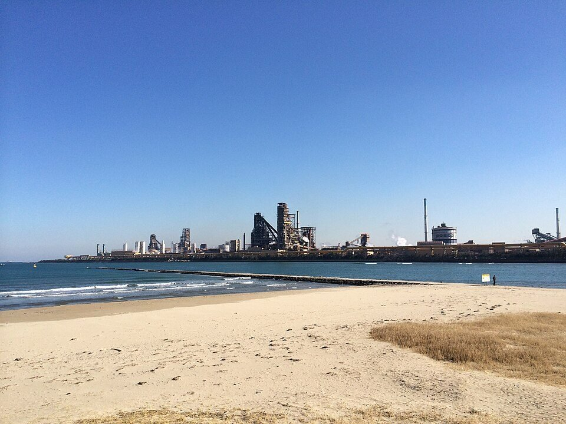
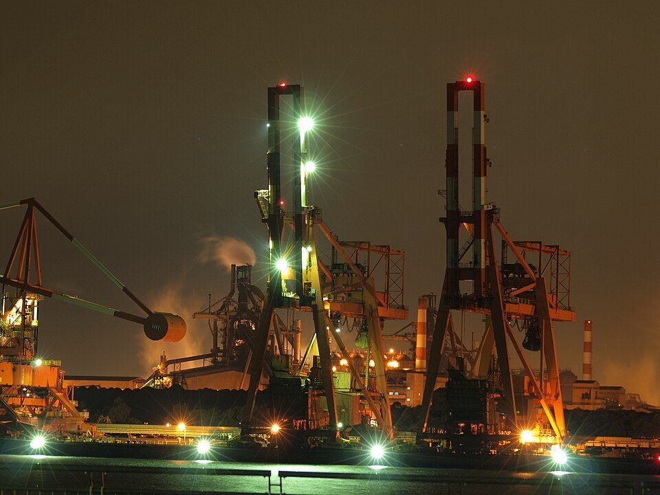
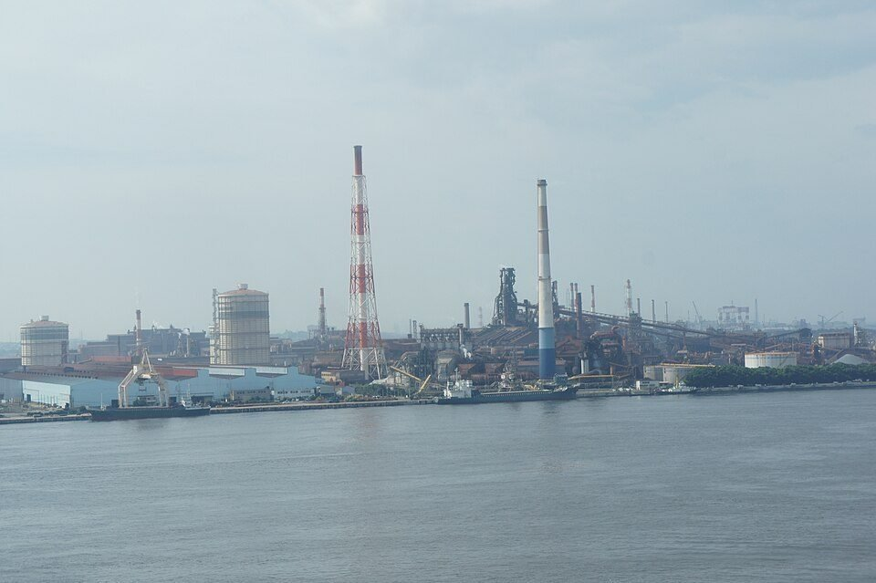

GLOBAL MILLS · JAPAN & KOREA · 2026.09
日韓鋼廠 9 月觀察：日本受颱風與出口疲弱拖累，韓國靠反傾銷稅守住內需
鋼鐵潮流工作室 · 發布 2026.10.13

本期重點
日本與韓國鋼廠今年走的是兩條路。世界鋼鐵協會（worldsteel）數據顯示，1–8 月日本粗鋼 5,399 萬噸、年減 0.2%，韓國 4,280 萬噸、年增 2.8%，兩國都比中國（年減 3.1%）穩。但 9 月日本被天災打亂：杜鵑颱風 9 月 21 日帶來豪雨，日本製鐵君津廠全廠停機、上游設備 9 月 24 日才復工；JFE 千葉地區在 8 月豪雨受損後又遇颱風，預估減產約 60 萬噸。需求面，日本 1–8 月鋼材出口年減 5.8%，韓國則對中、日熱軋課徵反傾銷稅，現代製鐵第二季淨利轉正。
- 產量：1–8 月日本年減 0.2%、韓國年增 2.8%；9 月官方產量數據尚未公布。
- 颱風：日本製鐵君津廠 9 月 21 日停機；JFE 9 月 25 日宣布千葉地區預估減產約 60 萬噸，部分產品交期延後，損失可能隨復原進度修正。
- 出口：日本 1–8 月鋼材出口 1,917 萬噸、年減 5.8%；對美國增 22.7%，對台灣、中國則減 16.2%、13.3%。
- 貿易措施：日本 6 月啟動對韓、中、台熱軋與冷軋鋼品的反傾銷調查，7 月起對中、台不鏽鋼冷軋課暫定稅，8 月 8 日起對韓、中熱浸鍍鋅鋼品課暫定稅；韓國 6 月對中、日熱軋公布最終稅率。
- 財報：日本製鐵上修全年淨利預測到 2,900 億日圓，主要靠美國鋼鐵；國內本業預測下修，中東情勢預估拖累全年事業利益約 600 億日圓。
關鍵數字
產量為 worldsteel 初步數據；出口為日本鐵鋼連盟（JISF）統計，經 SteelOrbis 整理；財務數字為各公司 8 月初公告。
產量：日本持平、韓國小幅成長
worldsteel 的 8 月報告顯示，全球粗鋼產量 1.442 億噸、年減 1.2%，1–8 月累計 12.2 億噸、年減 0.7%。日本 8 月產 666 萬噸、年增 0.4%，1–8 月累計 5,399 萬噸、年減 0.2%；韓國 8 月產 540 萬噸、年增 2.6%，累計 4,280 萬噸、年增 2.8%。同一份榜單上，印度年增 6.0%、土耳其年增 6.8%、越南年增 29.1%，中國則年減 3.1%。
日本的產品別數據（JISF 統計，經 SteelOrbis 整理）呈現分化：8 月熱軋寬幅鋼帶年減 3.6%、冷軋寬幅鋼帶年減 4.8%，厚板年增 4.8%、熱浸鍍鋅鋼板年增 9.7%。與前一個月相比，8 月粗鋼產量減少 3.9%。Mysteel 引述日本業界的看法指出，原料成本、人力短缺、利率上升、中國放緩與中東情勢，仍讓高爐廠的產量難以明顯回升。
需求面，日本經濟產業省（METI）對 7–9 月的展望是：鋼材總需求（含出口）1,805 萬噸、年減 3.1%，其中內需 1,200 萬噸、年減 1.3%，出口 605 萬噸、年減 6.4%。營建受人力短缺與高材料成本壓抑，汽車大致持平，產業機械則持續回升。日本製鐵的預估也類似：FY2026（2026 年 4 月至 2027 年 3 月）日本國內鋼材需求約 4,850 萬噸，略低於 FY2025 的約 4,900 萬噸。
日本：颱風打亂 9 月

日本氣象廳編號的 25 號颱風「杜鵑」（Dujuan）9 月 21 日接近關東。The Watchers 引述氣象資料，伊豆大島 24 小時降雨量 600 毫米，創該站 9 月紀錄；9 月 19 日以來，千葉縣降雨量超過 300 毫米，君津一帶出現淹水，千葉縣內至少 28 個市町村有淹水、道路積水。
鋼廠受到直接衝擊。SteelOrbis 報導，日本製鐵 9 月 21 日為防範颱風豪雨，暫停千葉縣君津地區（東日本製鐵所君津地區）的全部設施，當地媒體報導上游設備 9 月 24 日恢復運轉，下游設備預計逐步復工，完全復原仍需時間，報導沒有提供損失金額。君津地區有兩座高爐、年粗鋼產能約 800 萬噸，約一半產品供應內需、其餘出口。
JFE 的狀況更嚴重，而且是兩次受災。路透報導，JFE 鋼鐵 9 月 25 日宣布，千葉廠區 8 月的豪雨損壞設備，近期颱風又淹及部分已受損的設備，高爐仍在恢復正常運轉的過程中，預估粗鋼減產約 60 萬噸，部分產品交貨延後，沒有人員受傷；這個數字可能隨復原進度修正，對全年產量與獲利的影響也還在評估。千葉廠區 FY2025（至 2026 年 3 月）粗鋼產量 359 萬噸、JFE 鋼鐵全公司 2,137 萬噸，60 萬噸約相當於千葉廠區一年產量的 17%。
本刊判斷：60 萬噸約等於日本單月粗鋼產量（8 月 666 萬噸）的 9%，但損失會分散在災後數個月，不會全部落在 9 月；9 月官方數字會同時反映君津停機、千葉減產與季節性因素，要等 JISF 與 worldsteel 公布後才能拆解。Mysteel 也預期日本 9 月產量將年減，原因是颱風而非市況。
出口：周邊市場萎縮，美國是少數成長市場
日本 8 月鋼材出口 247 萬噸，比去年同月增 0.3%，但 1–8 月累計 1,917 萬噸、年減 5.8%。產品別中，1–8 月熱軋鋼捲出口 681 萬噸、年減 9.9%，冷軋年減 10.3%，鍍鋅鋼板年增 4.5%。Mysteel 以上半年 1,421 萬噸、年減 6.9% 估算，若下半年沒有明顯好轉，2026 年出口可能略高於 2,800 萬噸，創近年新低（2025 年為 3,008 萬噸）。
市場結構也在變。上半年對中東出口減少 51%，與伊朗戰事與荷莫茲海峽受阻有關，見〈伊朗鋼鐵 9 月觀察〉；對美國出口增 22.7%，上半年半成品對美出口幾乎增為三倍。本刊判斷，這可能與日本製鐵收購美國鋼鐵後，供應板胚有關，但出口統計沒有拆到客戶，不宜過度推論。METI 把保護主義升高、各國針對日本鋼品的貿易措施，以及中國供需失衡，列為出口的主要風險。
貿易措施：日韓同步築牆
| 國家 | 產品 | 對象 | 狀態 |
|---|---|---|---|
| 日本 | 熱軋鋼捲、薄板與鋼帶；冷軋鋼品 | 韓國、中國、台灣 | 經產省 2026 年 6 月 1 日公告啟動反傾銷調查 |
| 日本 | 鎳系不鏽鋼冷軋鋼捲、薄板與鋼帶 | 中國、台灣 | 暫定稅 3.6%–42.1%（依廠商而定），2026.07.09 至 11.08 |
| 日本 | 熱浸鍍鋅鋼捲、薄板與鋼帶 | 韓國、中國 | 暫定稅：韓國 29.2%–38%、中國 50.1%–55.3%；2026.08.08 至 12.07 |
| 韓國 | 熱軋鋼捲（碳鋼與合金鋼） | 中國、日本 | 最終稅：中國 28.16%–33.10%、日本 31.58%–33.43%；6 月 23 日生效，並接受部分廠商的最低價承諾 |
日本方面，METI 6 月 1 日對來自韓國、中國與台灣的熱軋鋼捲、薄板與鋼帶展開反傾銷調查，SMM 報導同案也涵蓋冷軋鋼品。熱浸鍍鋅的案子進展較快：METI 7 月下旬公布初步認定，8 月 4 日決定課徵暫定稅：韓國 29.2% 至 38%、中國 50.1% 至 55.3%，8 月 8 日起適用到 12 月 7 日。韓國業者中，POSCO 的稅率為 29.2%，是最低的一檔，但仍在 8 月 7 日向日本財務省提出意見，認為稅率過高；SteelRadar 引述的報導指出，POSCO 對熱軋、冷軋的調查案尚未提出異議。日本另在 7 月 9 日對中國、台灣的鎳系不鏽鋼冷軋鋼品課徵暫定稅，稅率 3.6% 至 42.1%，依廠商而定，適用到 11 月 8 日；SMM 報導台灣的裕聯（Yieh United）暫定稅率為 3.86%。日本製鐵在 8 月 4 日的財報說明中表示，預期這些反傾銷措施有助於支撐國內價格；在說明資料中，公司也指出迄今沒有看到客戶採購行為改變，並會留意經第三國轉口與課稅前的提前進口。
韓國方面，對中、日熱軋的案子由現代製鐵提出申請，6 月下旬公布最終稅率並接受部分出口商的最低價承諾：中國寶鋼、鞍鋼、武鋼等八家廠商與日本的多家商社及其關係企業參與；最低價以 CIF 計，自 7 月 1 日起每季重新議定，沒有參與承諾的廠商仍須繳稅。Mysteel 的摘要指出，7 月 POSCO 與現代製鐵合計的熱軋外售產量連續第三個月超過 100 萬噸，內銷年增 17%、出口年減 24%，並把內銷成長歸因於內需強勁與反傾銷措施；該報導全文需付費，這裡只引用公開摘要。
財報：日本製鐵靠美國，JFE 的颱風損失尚未入帳

日本製鐵。8 月 4 日公布 FY2026 第一季（4–6 月）：營收 2.82 兆日圓，排除存貨評價影響的事業利益 1,084 億日圓，歸屬母公司淨利約 750 億日圓；去年同期因出售 AM/NS Calvert 持股的一次性損失，淨損 1,958 億日圓。全年預測營收調高 2,000 億至 11.2 兆日圓，事業利益維持至少 7,000 億日圓，淨利從 2,200 億上修 700 億到 2,900 億日圓。
內部結構是「美國撐住、日本下修」。美國鋼鐵的全年事業利益預測從 1,000 億日圓上調到至少 1,800 億日圓；日本本業預測則從 1,900 億下修 700 億到 1,200 億日圓，其中約 400 億日圓歸因於中東。公司估計中東情勢第一季侵蝕事業利益約 250 億日圓，全年約 600 億日圓。在說明資料中，公司表示下半年國內本業的獲利改善，要靠國內流通市場每噸調漲 15,000 日圓（已實施約一半）、對特定客戶的價差改善與高附加價值產品比重提高。美國鋼鐵的進展見〈美國鋼市 9 月觀察〉。
JFE。8 月 5 日公布第一季淨利 312 億日圓，其中含 150 億日圓的土地出售利得；營收 1.16 兆日圓。全年淨利預測 1,500 億日圓、營收 4.85 兆日圓，這份預測發布時還沒有 9 月的颱風損失，JFE 表示仍在評估對產量與獲利的影響。
韓國：反傾銷稅撐住內需，兩大廠都在往海外找成長
現代製鐵。第二季營收 6.11 兆韓元、年增 2.7%；合併營業利益 577 億韓元，比第一季的 160 億韓元大增，但仍比去年同期的 1,020 億韓元少；淨利 120 億韓元，結束第一季 390 億韓元的虧損。鋼品銷量 442 萬噸、季增 3.7%，其中汽車鋼板 128 萬噸。公司預期下半年有低價進口減少、鋼廠維修與供給調整、原料成本上升等支撐。韓國投資證券（Korea Investment & Securities）分析師認為，中國減產推低鐵礦價與韓元走弱，會讓下半年價差擴大。
POSCO。第二季鋼鐵本業的營收與獲利季增，售價與銷量上升，抵銷原料與油價成本；管理層點出中東能源供應風險，並說歐洲約占出口的 10–15%，正與政府合作減輕歐盟配額縮減的衝擊，必要時把量轉到其他市場，歐盟新制見〈歐盟鋼鐵配額〉與〈歐洲鋼市 9 月觀察〉。光陽廠 250 萬噸的電弧爐 6 月完工，初期以高爐鐵水與電爐混合生產一般用鋼；管理層預期第三季鋼鐵獲利再改善。海外方面，POSCO 4 月宣布與印度 JSW Steel 各持股 50% 合資，在奧里薩邦興建年產 600 萬噸的一貫廠（Herald Business 報導目標 2031 年完工；GMK Center 報導交易預計年底前完成）。
美國布局。現代製鐵 9 月初在路易斯安那州動土，投資 58 億美元興建年產 270 萬噸的直接還原鐵加電爐廠，2029 年第一季商轉，POSCO 持股 20%，細節見〈現代製鐵路易斯安那廠〉。
對台灣的意義
- 台灣被列入日本調查對象：日本對台灣不鏽鋼冷軋鋼品已課暫定稅，熱軋、冷軋鋼品的調查又把台灣與韓國、中國並列；日本 1–8 月對台灣的鋼材出口同時年減 16.2%。本刊判斷，調查結果會直接影響台灣熱軋輸日的條件，調查期間日本進口商的下單意願也可能受影響。
- 東南亞競爭加劇：日本最大的出口市場泰國 1–8 月年減 1.7%，Mysteel 引述市場人士指出，印尼與越南擴充產能，加上中國出口不易減少，會讓東亞鋼廠在東南亞的競爭更激烈。本刊判斷，日韓在本土築起反傾銷牆後，被擠出的貨源有一部分會流向第三市場，台灣出口商要留意。
- 颱風是短期變數：君津與千葉的減產若拖到第四季，日本的熱軋、鍍鋅供應與交期可能偏緊，但實際影響要等 JFE 公布復原時程。
觀察重點
- JISF 與 worldsteel 9 月數據：日本是否出現颱風造成的年減，韓國是否延續年增。
- JFE 千葉高爐的復原時程，以及 JFE 是否因此下修全年預測。
- 日本對熱軋、冷軋的調查進展，以及熱浸鍍鋅暫定稅在 12 月 7 日後是否轉為最終稅。
- 韓國熱軋最低價承諾每季重新議定的結果，與 POSCO、現代製鐵第三季財報。
- 日本鋼材出口 9 月是否止跌，以及對美國的成長能否持續。
延伸閱讀
- 美國鋼市 9 月觀察：產能利用率衝上四年高點，熱軋價格年初至今漲近三成
- 歐洲鋼市 9 月觀察：熱軋價格一年多漲近三成，產量仍停在谷底
- 伊朗鋼鐵 9 月觀察：戰火七個月，中東產量降幅收斂，鋼胚出口改走陸路
- 現代製鐵路易斯安那廠
- 日本製鐵氫還原高爐
資料來源
- August 2026 crude steel production（worldsteel）
- Japanese crude steel output rises 0.4 percent in August 2026（SteelOrbis）
- Japan's crude steel output climbs in August but total still low（Mysteel）
- Japan steel demand outlook in July-September 2026 signals 3.1 percent decline（SteelOrbis）
- Japan's steel exports down 5.8 percent in Jan-Aug 2026（SteelOrbis）
- Despite June rise, Japan's steel exporters are having a dire year（Mysteel）
- Nippon Steel resumes upstream operations at Kimitsu after typhoon flooding（SteelOrbis，2026-09-25）
- JFE Steel sees 600,000-ton production impact from Chiba weather damage（路透／Mining.com，2026-09-25）
- JFE Steel expects 600,000 mt production loss after flooding at Chiba works（SteelOrbis）
- Typhoon Dujuan brings record rainfall to eastern Japan（The Watchers，2026-09-21）
- Nippon Steel announces financial results for the April-June quarter of FY2026（SteelRadar）
- Nippon Steel lifts FY2026 profit outlook as US Steel business boosts earnings（Arise News，2026-08-04）
- JFE Holding Q1 earnings surges（RTTNews，2026-08-05）
- Nippon Steel signs deal to sell former Kure site to Japan's Ministry of Defense（SteelOrbis）
- Japan Launches Anti-Dumping Investigations on CRC and HRC Imports from Three Asian Nations（SMM，2026-06-04）
- Initiation of an Anti-Dumping Duties Investigation of Hot-Rolled Steel Coil, Sheet and Strip（Korea, China, Taiwan）（METI，2026-06-01）
- Japan imposes anti-dumping duties on steel from China, Korea（Hellenic Shipping News，2026-08-05）
- Japan imposes provisional AD duties of up to 55.3% on galvanized steel imports from China and South Korea（SteelRadar）
- S. Korea imposes AD duties on HRC from China and Japan, approves minimum price agreements（SteelOrbis，2026-06-25）
- Japan imposes provisional anti-dumping duty on stainless steel from China and Taiwan（SMM，2026-07-10）
- Japan imposes provisional anti-dumping duties on Chinese and Taiwanese stainless steel（SMM，2026-07-22）
- POSCO challenges Japan's antidumping decision（SteelRadar）
- Japan formalizes provisional ADs on Korean, Chinese HDG imports（Mysteel，2026-08-05）
- South Korea formally imposes AD duties on Japanese, Chinese HR steel imports（Mysteel，2026-06-24）
- Q1 FY2026 決算說明 Q&A 摘要（日本製鐵 IR，2026-08-04）
- Nippon Steel swings to net profit in Q1 FY 2026-27（SteelOrbis）
- JSW Steel and POSCO have announced a joint venture to build a steel plant in India（GMK Center）
- South Korea: POSCO, Hyundai Steel's cumulative HRC production exceeds 1 Mnt for third straight month in Jul'26（Mysteel，僅引用公開摘要）
- Hyundai Steel returns to net profit in Q2 2026（SteelOrbis）
- Hyundai Steel's profitability expected to recover in the second half（SteelRadar）
- POSCO Q2 earnings call highlights（MarketBeat，2026-07-30）
- Posco increased profits from steel production in Q2（GMK Center，2026-08-03）
- Posco ranked 2nd in 2000, now 8th in 2025（Herald Business，引用 worldsteel《World Steel in Figures 2026》）
內容僅供產業資訊參考，不構成投資建議。新聞版權屬原出處所有。